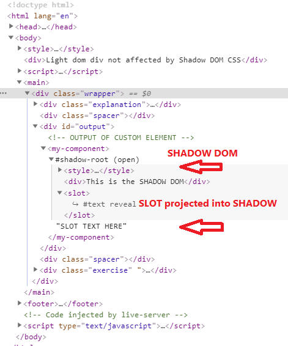
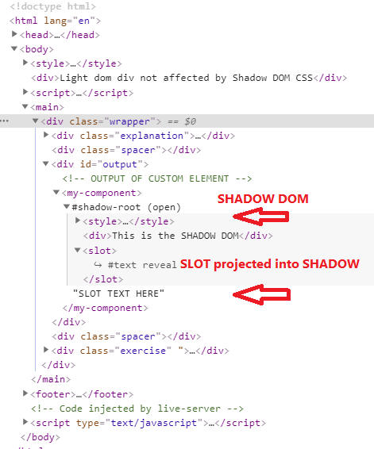

01-shadow-dom
The SLOT text is part of the LIGHT DOM and gets projected into the SHADOW DOM.
The Web Component is now just a regular Light DOM element so slot text is in the Light DOM.
Light dom div not affected by Shadow DOM CSS
The SLOT text is part of the LIGHT DOM and gets projected into the SHADOW DOM.
The Web Component is now just a regular Light DOM element so slot text is in the Light DOM.
